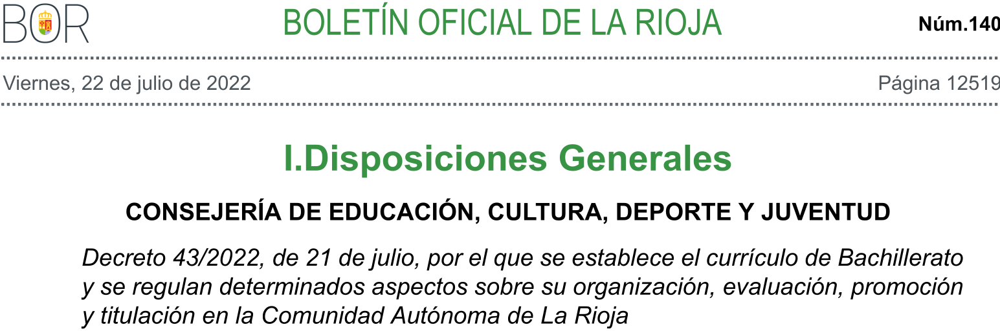
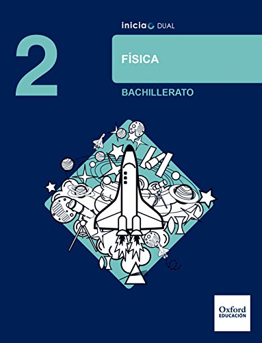
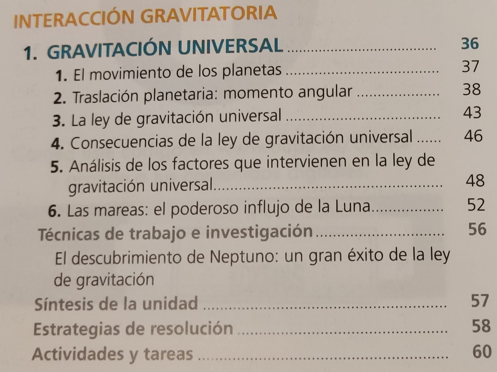

La presente Unidad Didáctica Gravitación universal se encuentra encuadrada en el Decreto 43/2022, de 21 de julio (BOR Núm. 140 de 21 de julio de 2022), por el que se establece el currículo de Bachillerato de la Comunidad Autónoma de La Rioja.

1º Bach: Física y Química
4º ESO: Física y Química
2º y 3º ESO: Física y Química
El centro es de un tamaño relativamente pequeño (20 alumnos por clase en Bach.).
Cuenta con unas instalaciones en la línea de lo que se estila en los institutos de la Comunidad Autónoma de La Rioja.
En 2º de Bach., la asignatura de Física es optativa.
Modalidad de Ciencias y Tecnología.
En esta UD se realiza una introducción sobre la Ley de Gravitación Universal y sus principales propiedades en el movimiento planetario.
En la UD posterior se profundizará más sobre los conceptos de campo gravitatorio, energía potencial gravitatoria, velocidades órbitales y de escape.
Dado que la asignatura de Física es optativa, se entiende que el alumado muestra interes por esta, con la mirada puesta en grados medios y/o superiores de FP técnicos (electricidad, electrónica, sonido, automatización,…) y grados universitarios de las ramas de ciencias y tecnología.
Son jóvenes de entre 17 y 18 años. Se producen cambios notables y surgen dudas importantes:
Desarrollo del pensamiento lógico y en posibles.
Dudas sobre su futuro académico y/o profesional.
Preparación para la selectividad o grado superior.
Esta situación puede producir niveles de estrés altos -> ansiedad, falta de autoestima, sueño de baja calidad, etc.
Importante: motivar, demostrarles que pueden y que, con una buena organización, son capaces de superarlo.
El nivel educativo del alumnado está dentro de la media para la zona geográfica y el curso.
Artículo 7 del Decreto 43/2022, de 21 de julio (BOR Núm. 140 de 22 de julio de 2022) -> (BOE Núm. 82, de 06 de octubre de 2022).
b) Consolidar una madurez personal, afectivo-sexual y social que les permita actuar de forma respetuosa, responsable y autónoma y desarrollar su espíritu crítico. Prever, detectar y resolver pacíficamente los conflictos personales, familiares y sociales, así como las posibles situaciones de violencia.
d) Afianzar los hábitos de lectura, estudio y disciplina, como condiciones necesarias para el eficaz aprovechamiento del aprendizaje, y como medio de desarrollo personal.
g) Utilizar con solvencia y responsabilidad las tecnologías de la información y la comunicación.
i) Acceder a los conocimientos científicos y tecnológicos fundamentales y dominar las habilidades básicas propias de la modalidad elegida.
j) Comprender los elementos y procedimientos fundamentales de la investigación y de los métodos científicos. Conocer y valorar de forma crítica la contribución de la ciencia y la tecnología en el cambio de las condiciones de vida, así como afianzar la sensibilidad y el respeto hacia el medio ambiente.
Competencia específica 1: Utilizar las teorías, principios y leyes que rigen los procesos físicos más importantes, considerando su base experimental y desarrollo matemático en la resolución de problemas, para reconocer la física como una ciencia relevante implicada en el desarrollo de la tecnología, la economía, la sociedad y la sostenibilidad ambiental.
Competencia específica 2: Adoptar los modelos, teorías y leyes aceptados de la física como base de estudio de los sistemas naturales y predecir su evolución para inferir soluciones generales a los problemas cotidianos relacionados con las aplicaciones prácticas demandadas por la sociedad en el campo tecnológico, industrial y biosanitario.
Competencia específica 3: Utilizar el lenguaje de la física con la formulación matemática de sus principios, magnitudes, unidades, ecuaciones, etc., para establecer una comunicación adecuada entre diferentes comunidades científicas y como una herramienta fundamental en la investigación.
Competencia específica 4: Utilizar de forma autónoma, eficiente, crítica y responsable recursos en distintos formatos, plataformas digitales de información y de comunicación en el trabajo individual y colectivo para el fomento de la creatividad mediante la producción y el intercambio de materiales científicos y divulgativos que faciliten acercar la física a la sociedad como un campo de conocimientos accesible.
Competencia específica 5: Aplicar técnicas de trabajo e indagación propias de la física, así como la experimentación, el razonamiento lógico-matemático y la cooperación, en la resolución de problemas y la interpretación de situaciones relacionadas, para poner en valor el papel de la física en una sociedad basada en valores éticos y sostenibles.
Competencia específica 6: Reconocer y analizar el carácter multidisciplinar de la física, considerando su relevante recorrido histórico y sus contribuciones al avance del conocimiento científico como un proceso en continua evolución e innovación, para establecer unas bases de conocimiento y relación con otras disciplinas científicas.
| Competencia clave |
Descriptores operativos |
|---|---|
| Competencia matemática y competencia en ciencia, tecnología e ingeniería (STEM) |
- STEM1 - STEM2 - STEM4 |
| Competencia personal, social y de aprender a aprender (CPSAA) |
- CPSAA3.2 - CPSAA4 |
| Competencia en comunicación lingüística (CCL) |
- CCL1 |
| Competencia digital (CD) | - CD1 - CD3 |
1.1. Reconocer la relevancia de la física en el desarrollo de la ciencia, la tecnología, la economía, la sociedad y la sostenibilidad ambiental, empleando adecuadamente los fundamentos científicos relativos a esos ámbitos.
1.2. Resolver problemas de manera experimental y analítica, utilizando principios, leyes y teorías de la física.
2.1. Analizar y comprender la evolución de los sistemas naturales, utilizando modelos, leyes y teorías de la física.
2.2. Inferir soluciones a problemas generales a partir del análisis de situaciones particulares y las variables de que dependen.
3.1. Aplicar los principios, leyes y teorías científicas en el análisis crítico de procesos físicos del entorno, como los observados y los publicados en distintos medios de comunicación, analizando, comprendiendo y explicando las causas que los producen.
3.2. Utilizar de manera rigurosa las unidades de las variables físicas en diferentes sistemas de unidades, empleando correctamente su notación y sus equivalencias, así como la elaboración e interpretación adecuada de gráficas que relacionan variables físicas, posibilitando una comunicación efectiva con toda la comunidad científica.
3.3. Expresar de forma adecuada los resultados, argumentando las soluciones obtenidas, en la resolución de los ejercicios y problemas que se plantean, bien sea a través de situaciones reales o ideales.
4.1. Consultar, elaborar e intercambiar materiales científicos y divulgativos en distintos formatos con otros miembros del entorno de aprendizaje, utilizando de forma autónoma y eficiente plataformas digitales.
4.2. Usar de forma crítica, ética y responsable medios de comunicación digitales y tradicionales como modo de enriquecer el aprendizaje y el trabajo individual y colectivo.
5.1. Obtener relaciones entre variables físicas, midiendo y tratando los datos experimentales, determinando los errores y utilizando sistemas de representación gráfica.
5.3. Valorar la física, debatiendo de forma fundamentada sobre sus avances y la implicación en la sociedad, desde el punto de vista de la ética y de la sostenibilidad.
6.1. Identificar los principales avances científicos relacionados con la física que han contribuido a la formulación de las leyes y teorías aceptadas actualmente en el conjunto de las disciplinas científicas, como las fases para el entendimiento de las metodologías de la ciencia, su evolución constante y su universalidad.
Decreto 43/2022 por el que se establece el currículo de Bachillerato de la Comunidad Autónoma de La Rioja.
Teniendo en cuenta la programación de la asignatura el libro de la asignatura, se procede al siguiente desglose de parte del saber básico A en bloques más pequeños:
Leyes del movimiento planetario.
Momento angular.
Gravitación.
Campo gravitatorio: desglosado en cálculo, energías y velocidades.
Introducción a la cosmología y la astrofísica.
Del desglose anterior, en esta Unidad didáctica se tratan los siguientes:
Leyes del movimiento planetario.
Momento angular.
Gravitación.
Introducción a la cosmología y la astrofísica (tratado en una exposición oral, junto con los tres anteriores).
Inicio:
Sesión 1.
Objetivo: motivar e identificar ideas previas.
Diálogo y debate sobre los saberes básicos de la UD.
Grupos para una exposición oral (temas a determinar por el docente y los alumnos).
Desarrollo:
Sesiones 1 a 4.
Exposición del profesor.
Ejemplos y resolución de ejercicios.
Resolución de ejercicios de tarea por parte de los alumnos.
Interacción con los alumnos.
Cierre:
Sesión 5: exposición oral de los grupos.
Sesión 6: clase de repaso.
Sesión 7: examen escrito sobre los saberes básicos de la UD.
UD Gravitación universal, 2ºBach. Curso 2023-24
| Sesión | Actividades | Grupo y lugar |
Tipo | Saberes básicos |
Comp. esp. |
Criterios de evaluación |
Descrip. oper. |
Tipo eval. | Ev.: procedim. | Ev.: Instrum. |
|---|---|---|---|---|---|---|---|---|---|---|
| 10' Debate y diálogo |
GG Aula clase |
Identificar ideas previas |
Todos | 1,5,6 | 1.1, 5.3, 6.1 | STEM1, STEM2 |
Diagnóstica | Observación sistemática |
Registro anecdótico |
|
| 25' Exposición profesor |
GG Aula clase |
Desarrollo | Leyes movimiento planetario y momento angular |
1,2,3 | 1.1,1.2, 2.1,2.2, 3.1,3.2 |
STEM1, STEM2, CCL1 |
||||
1 |
12' Resolución ejercicios |
GG Aula clase |
Síntesis | 1,2,3,5 | 1.2, 3.2, 3.3, 5.1 | STEM1, STEM2, CCL1 |
Formativa | Preguntas de análisis | Lista de control, escala de valoración |
|
| 3' Asignación trabajo: exposición oral |
Por grupos | Evaluación | Todos los de la UD | 3,4 | 3.1,3.2,3.3, 4.1,4.2 |
CCL1, STEM4, CPSAA4, CD1, CD3 |
Sumativa | Exposición oral (sesión) |
||
| 30' Exposición profesor |
GG Aula clase |
Desarrollo | Momento angular | 1,2,3 | 1.1,1.2, 2.1,2.2, 3.1,3.2 |
STEM1, STEM2, CCL1 |
||||
2 |
15' Resolución ejercicios |
GG Aula clase |
Síntesis | 1,2,3,5 | 1.2, 3.2, 3.3, 5.1 | STEM1, STEM2, CCL1 |
Formativa | Preguntas de análisis | Lista de control, escala de valoración |
|
| 5' Asignación tarea |
Indiv. | Evaluación | 1,2,3,5 | 1.2, 3.2, 3.3, 5.1 | STEM1, STEM2, STEM4, CCL1, CD3 |
Sumativa | Entrega trabajo escrito en plataforma virtual |
Lista de control, escala de valoración |
| Sesión | Actividades | Grupo y lugar |
Tipo | Saberes básicos |
Comp. esp. |
Criterios de evaluación |
Descrip. oper. |
Tipo eval. | Ev.: procedim. | Ev.: Instrum. |
|---|---|---|---|---|---|---|---|---|---|---|
| 10' Resolución ejercicios tarea |
GG Aula clase |
Síntesis | 1,2,3,5 | 1.2,3.2,3.3,5.1 | STEM1, STEM2, CCL1 |
Formativa | Resolución en pizarra por alumnos y profesor |
Lista de control, escala de valoración |
||
3 |
20' Exposición profesor |
GG Aula clase |
Desarrollo | Gravitación |
1,2,3 | 1.1,1.2, 2.1,2.2 3.1,3.2 |
STEM1, STEM2, CCL1 |
|||
| 15' Resolución ejercicios |
GG Aula clase |
Síntesis | 1,2,3,5 | 1.2,3.2,3.3,5.1 | STEM1, STEM2, CCL1 |
Formativa | Preguntas de análisis |
Lista de control, escala de valoración |
||
| 5' Asignación tarea |
GG Aula clase |
Evaluación | 1,2,3,5 | 1.2,3.2,3.3,5.1 | STEM1, STEM2, STEM4, CCL1, CD3 |
Sumativa | Entrega trabajo escrito en plataforma virtual |
Lista de control, escala de valoración |
||
| 10' Resolución ejercicios tarea |
GG Aula clase |
Evaluación | 1,2,3,5 | 1.2,3.2,3.3,5.1 | STEM1, STEM2, CCL1 |
Formativa | Resolución en pizarra por alumnos y profesor |
Lista de control, escala de valoración |
||
4 |
20' Exposición profesor |
GG Aula clase |
Desarrollo | Gravitación |
1,2,3 | 1.1,1.2, 2.1,2.2, 3.1,3.2 |
STEM1, STEM2, CCL1 |
|||
| 15' Resolución problemas |
GG Aula clase |
Síntesis | 1,2,3,5 | 1.2,3.2,3.3,5.1 | STEM1, STEM2, CCL1 |
Formativa | Preguntas de análisis |
|||
| 5' Asignación tarea |
GG Aula clase |
Evaluación | 1,2,3,5 | 1.2,3.2,3.3,5.1 | STEM1, STEM2, STEM4, CCL1, CD3 |
Sumativa | Entrega trabajo escrito en plataforma virtual |
Lista de control, escala de valoración |
| Sesión | Actividades | Grupo y lugar |
Tipo | Saberes básicos |
Comp. esp. |
Criterios de evaluación |
Descrip. oper. |
Tipo eval. | Ev.: procedim. | Ev.: Instrum. |
|---|---|---|---|---|---|---|---|---|---|---|
5 |
50' Exposición oral alumnos |
Por grupos, Aula clase |
Divulgación | Todos los de la UD |
3,4 | 3.1,4.1,4.2 | STEM4, CCL1, CPSAA4, CD1, CD3 |
Formativa | Producción oral | Lista de control, escala de valoración |
6 |
50' Repaso: realización (indiv.) y corrección de ejercicios |
GG Aula clase |
Síntesis | Todos los de la UD | 1,2,3 | 1.2,2.1,3.1,3.2 | STEM1, STEM2, CCL1, |
Formativa | Preguntas de análisis, evaluación y/o creación |
Lista de control, escala de valoración |
7 |
50' Examen escrito |
Indiv. Aula clase |
Evaluación | Todos los de la UD | 1.2,2.1,3.1,3.2,3.3 | STEM1, STEM2, CCL1 |
Sumativa | Prueba objetiva | Resolución de ejercicios y problemas |
Mediante el diálogo y debates iniciales (eval. diagnóstica), se procederá a fomentar la participación de todo el alumnado para valorar las medidas (de necesitarse) de regulación de las actividades que se han programado.
Mediante la resolución de ejercicios de tarea en clase por parte de los alumnos (eval. formativa), se identificará cualquier circunstancia que necesitara cualquier tipo de adaptación curricular.
La información obtenida se utilizará para decidir cómo se asignarán las diferentes tareas programadas (eval. sumativa) para resolver en casa. Estas tareas se dividirán en 3 niveles de complejidad. Se pretende con esto que la motivación y la autoeficacia no decaigan.
En caso de haber algún ACNEAE, se tomarán las medidas adecuadas a su situación (TDAH, TAS, deficiencia visual, auditiva, motriz, etc.), y en coordinación con los diferentes responsables (orientación, familia, etc.), para asegurar el correcto desarrollo educativo.
Toda medida tomada se hará de acuerdo a los principios del DUA.
| Tipo | Actividades | Características |
|---|---|---|
| Diagnóstica | Debate/diálogo inicial | - Al inicio de la UD. - detectar ideas previas y diferencias individuales. |
| Formativa | - Preguntas durante las explicaciones - Preguntas de análisis durante las resoluciones - Ejercicios de síntesis |
- De menor a mayor complejidad. - Tanto cualitativos como cuantitativos. |
| - Ejercicios de tarea: -> 25% | - Hojas según el nivel de dificultad. - Individuales. Asignadas según alumno y entregadas en la plataforma virtual. |
|
Sumativa |
- Exposición oral -> 35% | - Presentación en grupo. - Tiempo: 15min. |
| -Examen escrito -> 40% | - Individual. - Basado en ejercicios ya realizados. |
Gracias por su atención.
Oxford Education, Inicia Dual, Física, 2º de Bachillerato, 2016
ISBN: 978-01-905-0258-4


David Domínguez Román - Universidad de La Rioja